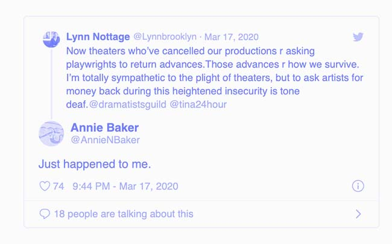
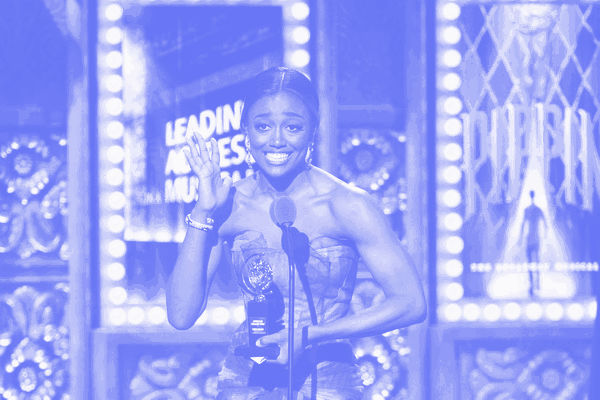

How Theater Lives
A news based archive outlining small and lasting effects COVID-19 will have on the theater industry.
March
1 2 3 4 5 6 7 8 9 10 11“We are highly recommending that all stage door activities be eliminated for the time being,” the Broadway League, a trade organization representing producers and theater owners said on 3/11. Standing at the stage door to meet actors is a long standing tradition in the theater community
A Broadway usher also tested positive for coronavirus. The employee worked recently at “Who’s Afraid of Virginia Woolf?” and “Six,” prompting a scramble to inform the public and clean the theaters..
12On March 12, NY Gov Andrew Cuomo ordered a 30 day ban on events of 500 people+ to slow the spread of COVID-19, effectivly shutting down Broadway theaters for a month. This would be the longest period of time Broadway theaters would be dark. On the evening of 3/12, SIX was scheduled to open on Broadway and Flying Over Sunset was to begin previews. The Inheritance, and A Soliders Play closed 4 days prior to their scheduled final performances which were Sunday March 15th.
13Many Off-Broadway theaters (500 or less seats) close following the lead of the Broadway theaters. Shutterd theaters are Atlantic Theater Company, The Public, MCC Theater, among others.
14 15Bill de Blasio, Mayor of New York City, has declared that all theaters, concert venues and nightclubs be closed temporarily in response to the COVID-19 pandemic, effective March 17
16"I just feel like it's really needed right now. Ya know, I think this is a really sort of dark and scary time,". "There's nothing like live theater, but when you can't get into a room with a thousand other people, the best thing we can do is watch it online, and create the largest theater in the world."- Tony Winner Laura Benanti launches a viral social media campaign to engage students whose school musicals got cut short.
17 Will Swenson, Marin Ireland, Rachel Dratch & More Launch 24 Hour Plays' Viral Monologues Initiative
Britney Spears Jukebox Musical Once Upon a One More Time Postpones Pre-Broadway Run in Chicago
It was also announced that the Theater World Awards would be postponed to the fall.
18Straining From Shutdowns, Theaters Ask Playwrights to Return Payments This was also the day I effectly got all my refunds for the shows I had tickets for, during the month.....first time I didn't want a refund. check.
19 20“It was announced that Martin McDonagh's Comedy Hangmen would not resume performances following the Broadway shutdown. Hangmen played its final performance on March 11. In total, the production played 13 previews on Broadway.
The Broadway League also announced the cancellation of the 2020 Jimmy Awards due to the ongoing COVID-19 pandemic. The 12th annual celebration of high school talent had been scheduled to take place on June 29 at the Minskoff Theatre.
"We are heartbroken that so many of the 143,000 students who participate in high school musicals across the country will not have an opportunity to show off their hard work, and that 92 nominees won't be able to realize their Broadway dreams this year by performing live on a Broadway stage at the Jimmy Awards in New York City," said Charlotte St. Martin, president of the Broadway League. "Our priority is the health and safety of all. We look forward to next year when we can welcome nominees and fans back to the Big Apple and continue to celebrate the future of Broadway together at the 2021 Jimmy Awards."
21 In addition to Hangmen, it was announced that Who's Afraid of Virginia Woolf?, Starring Laurie Metcalf & Rupert Everett, Will not continue on Broadway after 9 preview performances.
It was also announced that under an agreement between The Broadway League, and 14 labor unions representing a range of workers, from ushers to makeup artists to publicists, most unionized employees will be paid for the week that was cut short by the shutdown, and the following two weeks. For the first, partial, week, they will receive their normal salary, but there is a cap of 150 percent of the minimum salary for their positions as spelled out in labor contracts. For the following two weeks, they will be paid at the contractual minimum, meaning that those who normally earn more than the minimum will see a pay cut for those weeks.
22 The Rosie O’Donnell show returns, with guests in the basement and a bathtub for over 3 hours ; the Broadway superfan schmoozed, fund-raised and gave stars a chance to share their music. The event raised over $600,000, for The Actors Fund. 
23 24 Terrence McNally, Tony-Winning Playwright of Gay Life, Dies at 81. McNally, who died of coronavirus complications, introduced audiences to characters and situations that most mainstream theater had previously shunted into comic asides. 
Lincoln Center Theater announced that they have postponed premieres of Flying Over Sunset and Intimate Apparel until the fall.
25 The Tony Awards which were scheduled for June are postponed. The 74th annual ceremony and television broadcast won’t happen until Broadway reopens. How shows will be eligible remains to be determined. The Tony Awards are the biggest advertising the Broadway industry gets each year. 
Roundabout Theater Company announced schedule changes for Caroline, or Change,and Birthday Candles both now scheduled to begin performances this fall on Broadway.
70th Annual Outer Critics Circle Awards also are postponed
26 27 Mark Blum, a familar face Off Broadway, died at 69. He died of coronavirus complications and was also seen on Broadway; in “Crocodile Dundee” and other movies; and on numerous television shows.
28 Due to the COVID-19 pandemic, New York City Center has announced the cancellation of its spring Encores! staging of Thoroughly Modern Millie. Tony nominee Ashley Park was slated to headline the production, originally scheduled for May 6-10.
29 30 31 35th Annual Lucille Lortel Awards Ceremony to Be Presented Virtually in May. "Our desire to recognize and celebrate the excellence of the off-Broadway season is not diminished by the concerns we are all facing," said Terry Byrne, president of the Off-Broadway League. "Indeed, it is essential for our morale to do just that." 
The Look Book Goes to Broadway Stars’ Couches
Vulture, April 13 2020
April
1 2 3 4 5 6 7 8 9 10 11 12 13 14 15 16 17 18 19 20 21 22 23 24 25 26 27 28 29 30 31